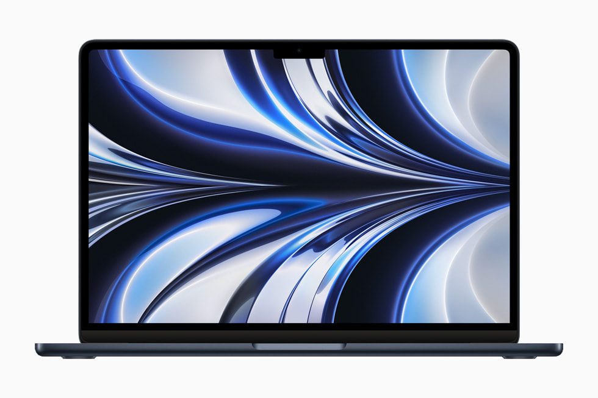
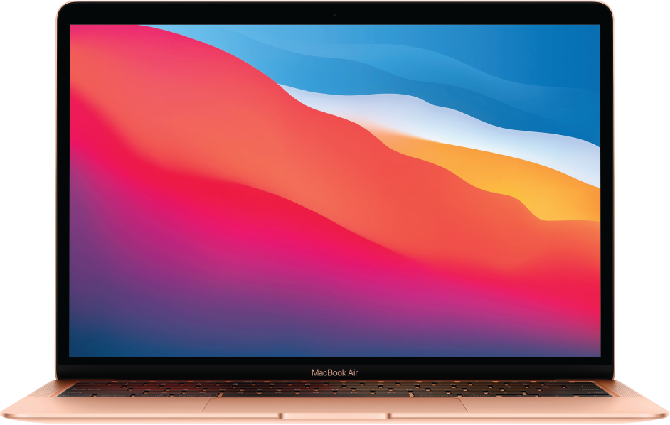
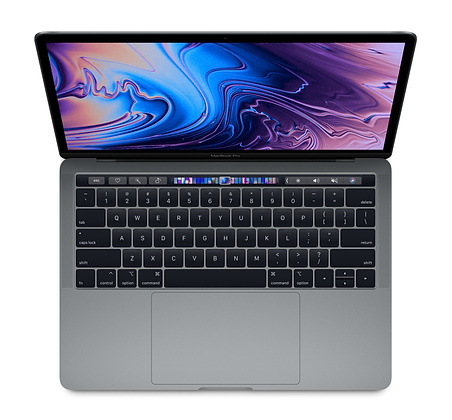
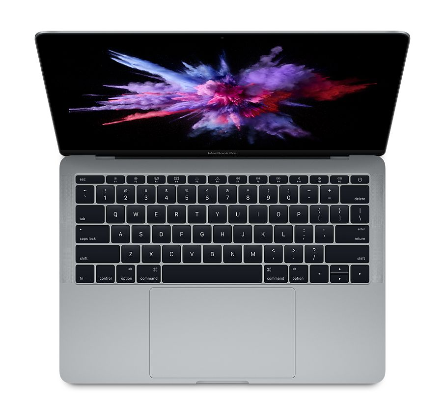

LEVEZA EM PRIMEIRO LUGAR2022
MacBook Air
Seu dia, em movimento.
- Modelo de referência
- 13,6” · Air M2
- Memória de referência
- 8 GB
- SSD de referência
- 256 GB
- Peso¹
- 1,24 kg
MacBooks a partir de R$ 1.900.
Escolha o seu. Conheça cada detalhe.

Do dia a dia ao seu próximo projeto.
Compare o que faz diferença.
Seu dia, em movimento.

Espaço para a sua próxima ideia.
A partir de R$ 3.200
Ver ficha oficial Apple ↗
Clássico por fora. Suas ideias por dentro.
A partir de R$ 2.400
Ver ficha oficial Apple ↗
Um novo capítulo para um clássico.
A partir de R$ 1.900
Ver ficha oficial Apple ↗Modelos de referência: Air M1/M2 e Pro Intel de 13” com duas portas Thunderbolt 3. Outras versões têm especificações diferentes. A configuração e a disponibilidade variam por unidade. Confirme memória, SSD, estado e acessórios na oferta da unidade. Imagens oficiais ilustrativas, não são fotos do aparelho à venda.
Mais do que uma geração.
Compare o que importa para você.
| Na sua escolha | Pro 2017 | Pro 2019 | Air M1 | Air M2 |
|---|---|---|---|---|
| Preço informado | R$ 1.900 | R$ 2.400 | R$ 3.200 | Sob consulta |
| Referência OLX / Mercado Livre* | R$ 2.300+ | R$ 3.000+ | R$ 3.600+ | R$ 4.100+ |
| Tela | 13,3” Retina | 13,3” Retina | 13,3” Retina | 13,6” Liquid Retina |
| Processador comparado | i5-7360U · 2 núcleos | i5-8257U · 4 núcleos | M1 · 8 núcleos | M2 · 8 núcleos |
| RAM de referência | 8 GB | 8 GB | 8 GB | 8 GB |
| SSD de referência | 128 / 256 GB | 128 / 256 GB | 256 GB | 256 GB |
| Explore |
* Referências fornecidas pela Dropmac, sem anúncios verificados; não são médias de mercado. Pro Intel: versões de 13” com duas portas Thunderbolt 3. As configurações dos aparelhos à venda precisam ser confirmadas. Resultados de laboratório não são testes das unidades da Dropmac.
Confira o teste do Air M2 do canal Max Tech, publicado em 2022. O vídeo mostra jogos e métodos de execução diferentes; seus resultados não foram convertidos em uma promessa de FPS para o nosso estoque.
Assistir ao benchmark no YouTube ↗MacBook Pro 2017 a partir de R$ 1.900.
Uma nova possibilidade para o seu orçamento.
Valores e condições variam por unidade. Consulte a oferta disponível.
Veja o que cabe hoje, o que muda com um pouco mais e quanto tempo levaria para chegar lá.
Use apenas o valor que pode separar para essa compra. O simulador não considera crédito ou financiamento.
Toque em um modelo para explorar sua posição no gráfico.
No modo equilíbrio, escolhemos a maior pontuação multicore por real dentro do orçamento. Para esperar, procuramos uma melhoria nesse indicador que caiba no prazo e na economia mensal informados. “Gastar o mínimo” prioriza o menor preço. “Apple Silicon” dá preferência ao M1 entre os modelos com preço conhecido.
¹ Ganho relativo de pontos multicore entre os dois modelos, não ganho garantido em aplicativos ou jogos.
Os usos de programação, edição e jogos acrescentam ressalvas; não provam compatibilidade nem mudam artificialmente os benchmarks. O prazo é arredondado para cima: valor que falta ÷ economia mensal. Preços são mantidos constantes na simulação; estoque, frete e condições podem mudar.
Fonte: Geekbench 7 — médias públicas consultadas em 10/09/2026. Preços informados pela Dropmac. RAM/SSD das médias não são controlados. Pontuação de CPU não representa FPS, velocidade de todos os apps, bateria ou conservação. M2 não participa sem preço Dropmac.
Um bom Mac merece
uma escolha bem informada.
Peça fotos da unidade, descrição das marcas de uso e a configuração exata de memória e armazenamento.
Confira a saúde e os ciclos da bateria. A autonomia de um aparelho usado depende da condição e do seu uso.
Confira identificação do vendedor, nota fiscal, garantia, devolução, prazo de entrega e valor total antes de pagar.
Compare a versão exata, não apenas o nome Air ou Pro. Nesta seleção, os Air usam chips M1/M2; os Pro 2017/2019 usam Intel. Confira os requisitos dos seus aplicativos, o macOS compatível e o estado da unidade.
A memória destes modelos é integrada e deve ser escolhida antes da compra. Nos Air M1/M2, ela é unificada. Confirme se 8 GB atendem aos requisitos dos seus aplicativos ou procure uma configuração maior.
Quando uma oferta estiver conectada, você seguirá para a página do produto na loja. Preço, estoque, frete e pagamento serão confirmados lá. Consulte a disponibilidade e as condições da unidade com a Dropmac.
Não. Esta seleção apresenta gerações de 2017, 2019, 2020 e 2022 para revenda. A disponibilidade depende do catálogo real. Compatibilidade de software e suporte variam conforme a versão exata.